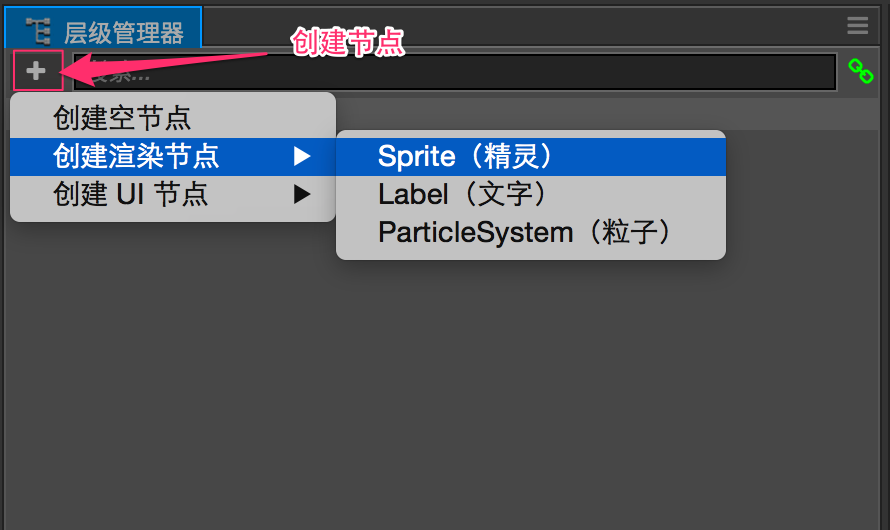
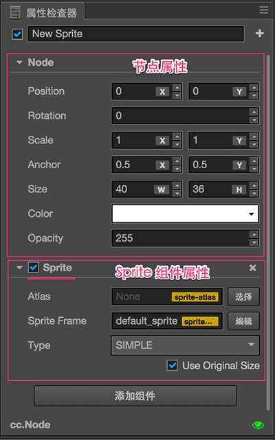
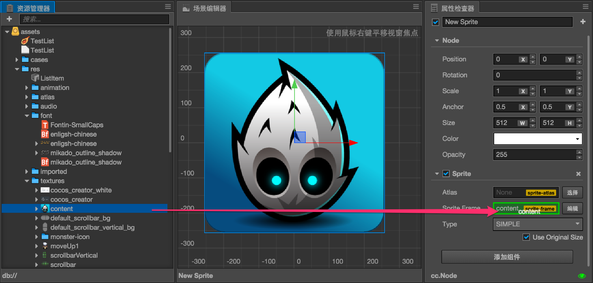
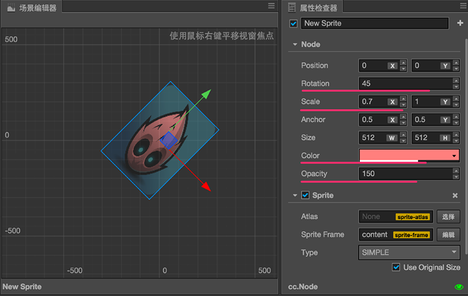
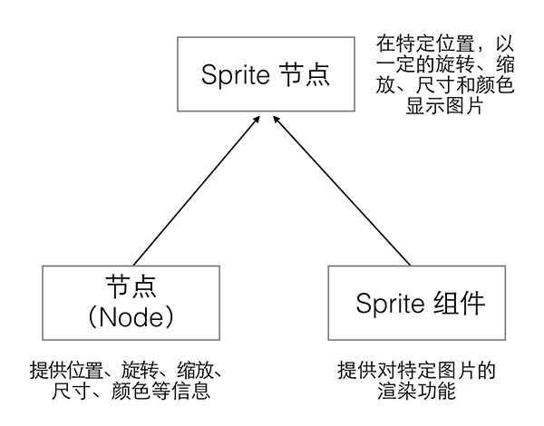
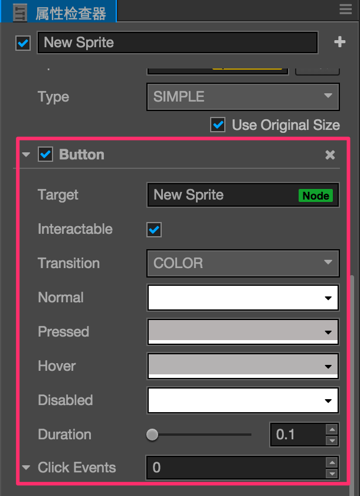

节点和组件
Cocos Creator 的工作流程是以组件式开发为核心的，组件式架构也称作 组件-实体系统（或 Entity-Component System），简单的说，就是以组合而非继承的方式进行实体的构建。
在 Cocos Creator 中，节点（Node）是承载组件的实体，我们通过将具有各种功能的 组件（Component） 挂载到节点上，来让节点具有各式各样的表现和功能。接下来我们看看如何在场景中创建节点和添加组件。
创建节点（Node）
要最快速的获得一个具有特定功能的节点，可以通过 层级管理器 左上角的 创建节点 按钮。我们以创建一个最简单的 Sprite（精灵）节点为例，点击 创建节点 按钮后选择 创建渲染节点/Sprite（精灵）：

之后我们就可以在 场景编辑器 和 层级管理器 中看到新添加的 Sprite 节点了。新节点命名为 New Sprite，表示这是一个主要由 Sprite 组件负责提供功能的节点。您也可以尝试再次点击 创建节点 按钮，选择其他的节点类型，可以看到他们的命名和表现会有所不同。
组件（Component）
Sprite 组件
我们有了一些节点，现在我们就来看看什么是组件，以及组件和节点的关系。选中我们刚才创建的 New Sprite 节点，可以看到 属性检查器 中的显示：

属性检查器 中以 Node 标题开始的部分就是节点的属性，节点属性包括了节点的位置、旋转、缩放、尺寸等变换信息和锚点、颜色、不透明度等其他信息。我们将在 节点属性 部分进行详细介绍。
接下来以 Sprite 标题开始的部分就是 Sprite 组件的属性，在 2D 游戏中，Sprite 组件负责游戏中绝大部分图像的渲染。Sprite 组件最主要的属性就是 Sprite Frame，我们可以在这个属性指定 Sprite 在游戏中渲染的图像文件。让我们试试从 资源管理器 中拖拽任意一张图片资源到 属性检查器 的 Sprite Frame 属性中：

可以看到刚才的默认 Sprite 图片变成了我们指定的图片，这就是 Sprite 组件的作用：渲染图片。
节点属性对 Sprite 组件的影响
节点和 Sprite 组件进行组合之后，就可以通过修改节点属性来控制图片渲染的方式，您可以按照下图中红线标记属性的设置对您的节点进行调整，可以看到图片的旋转、比例、颜色和不透明度都发生了变化：

我们前面提到了组件式的结构是以组合方式来实现功能的扩展的，下图中就展示了节点和 Sprite 组件的组合。

节点颜色（Color）和不透明度（Opacity）属性
上图中节点的 颜色（Color） 属性和 不透明度（Opacity） 属性直接影响了 Sprite 组件对图片的渲染。颜色和不透明度同样会影响 文字（Label） 这样的渲染组件的显示。
这两个属性会和渲染组件本身的渲染内容进行相乘，来决定每个像素渲染时的颜色和不透明度。此外不透明度（Opacity）属性还会作用于子节点，可以通过修改父节点的 Opacity 轻松实现一组节点内容的淡入淡出效果。
添加其他组件
在一个节点上可以添加多个组件，来为节点添加更多功能。在上面的例子中，我们可以继续选中 New Sprite 这个节点，点击 属性检查器 面板下面的 添加组件 按钮，选择 添加 UI 组件/Button 来添加一个 Button（按钮）组件。
之后按照下图对 Button 组件的属性进行设置（具体的颜色属性可以根据爱好自由设置）：

接下来点击工具栏上面的 运行预览 按钮  ，并在浏览器运行窗口中将鼠标悬停在图片上，可以看到图片的颜色发生变化，也就是我们为节点添加的 Button 组件行为生效了！
，并在浏览器运行窗口中将鼠标悬停在图片上，可以看到图片的颜色发生变化，也就是我们为节点添加的 Button 组件行为生效了！
小结
上面的例子里，我们先是将 Sprite 组件和节点组合，有了可以指定渲染图片资源的场景图像，接下来我们通过修改节点属性，能够对这个图像进行缩放和颜色等不同方式的显示。现在我们又为这个节点添加了 Button 组件，让这个节点具有了根据按钮的不同状态（普通、悬停、按下等）的行为。这就是 Cocos Creator 中组件式开发的工作流程，我们可以用这样的方式将不同功能组合在一个节点上，实现如主角的移动攻击控制、背景图像的自动卷动、UI 元素的排版和交互功能等等复杂目标。
值得注意的是，一个节点上只能添加一个渲染组件，渲染组件包括 Sprite（精灵）， Label（文字），Particle（粒子）等。
参考阅读
继续前往 坐标系和变换 说明文档。